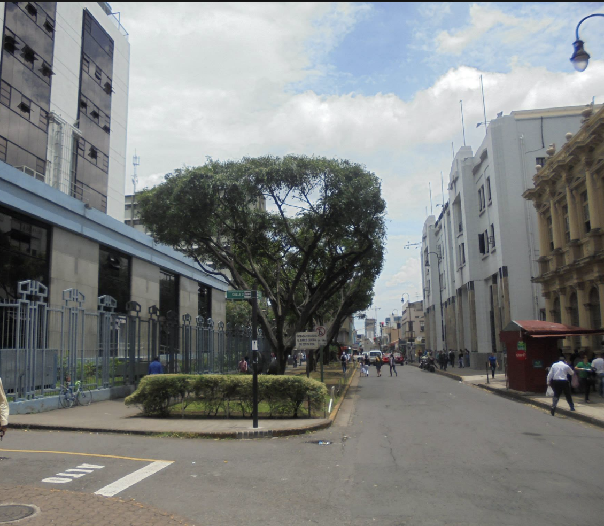

Franklin Breaks Record
 Franklin has a tropical wet and dry climate. Precipitation varies widely between the driest month (6.3 mm (0.25 in)) and the wettest month (355.1 mm (13.98 in)), but it is going to be sunny the whole week, while having an average temperature that will vary little. The hottest month is April with an average temperature of 74.7 °F, while the coolest month is October with an average temperature of 71.2 °F, but this year the record is broken by having the highest temperatures of 72 °F - 89 °F.